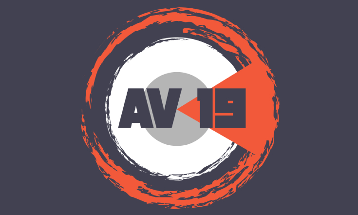
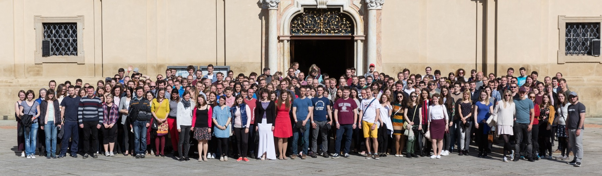
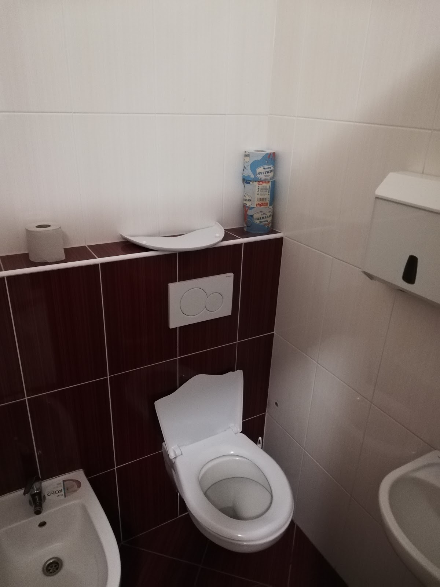

Ahoj!
V první části jsme si něco řekli o přípravě AV19. Ale jaká byla samotná akce? I tuto část pojmeme jako statistické okénko do Absolventského Velehradu.
Jaký byl AV 19?
Na začátek nějaké počty, ať si uděláme přehled:
Tady bychom se rádi zastavili a dali nahlédnout do toho, co se dělo při registraci na místě (která zahrnovala jen program - bez jídla a spaní). Mysleli jsme si, že přijdete tak 20-30 lidí z okolí. Přijelo 140! Překvapení a prvotní šok následovala krizová porada v 11 večer, kde jsme řešili navýšení kapacit kde to šlo. A pak už jsme jen doufali, abychom se ve vinárně - a vlastně všude - neušlapali. Byť nám bylo večer ve sklepě trošku horko, všechno jsme nakonec zvládli.
Na Absolventském Velehradu jste mohli potkat 2 řádové sestry, 8 kněží a jáhna, 12 ministrantů, 38 hostů, 68 dobrovolníků z řad účastníků a v neposlední řadě 14 organizátorů. Naši hosté během přednášení vypili 20 litrů vody s citrónem a mátou a průměrná kapacita aktivity byla 68 lidí.
Mohli jsme slyšet povídání apoštolského nuncia Charlese Daniela Balva o jeho službě, vyprávět Josefa Pejchala o jeho životě v showbyznysu, či jak se Jan Špilar nestal politikem. Ondřej Kobza nás zasvětil do toho jak oživovat prostor kolem sebe . Jan Regner nám ukázal cesty k radosti a Pavel Bělobrádek řešil jak být člověkem a společností s hodnotami po dvou totalitách. A bylo toho mnohem víc...
Mysleli jsme si, že přijdete tak 20-30 lidí z okolí. Přijelo 140!
A těch všemožných aktivit.. den jsme mohli začít rozcvičkou, pak si vyzkoušet Krav Maga, naučit se správně rozmluvit a přečíst text veřejně, zatančit si na téma “Ale co já?”, zaswingovat si, zklášlit se při Beauty workshopu a pak se třeba seznámit se u speed-datingu. A mnoho, mnoho dalšího. Večer, když už člověk sumíroval den, tak se mohl věnovat modlitbě v kapli, ale i vínu ve sklépku. Ideální, že?
Pokud nepočítáme mše svaté a modlitby, tak nejvíc lidí bylo na Zpěvech Taizé, chválách a pak samozřejmě večer v čajovně/sklepě, kde se vypilo 160 litrů vína a rozbilo pouhých 6 skleniček. A překvapivě se rozbilo i záchodové prkénko na dámských záchodech. Což mimochodem byla snad nejdražší věc, která se mohla rozbít, dle slov pana ředitele.
A věříme, že všichni účastníci AV19 si z akce odnesli nezapomenutelné zážitky, hodně poznatků, nově navázaných vztahů a povzbuzení do dalších dní svého života!